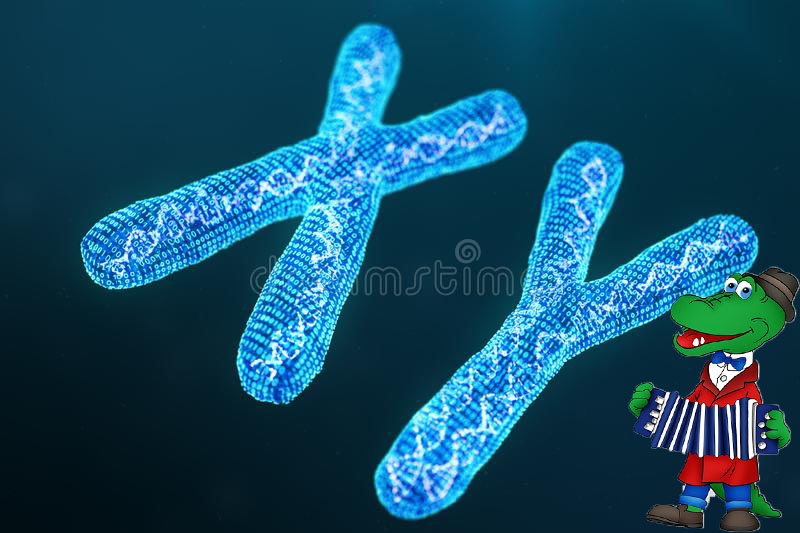

Критерии гениальности
Признайтесь, вы хоть раз пытались найти у себя признаки гениальности. Нет? А как же фраза: «Ну, разве я не гений?!» Сколько раз вы произносили ее, сделав что-то исключительное, до чего не додумались окружающие? Но гениальность заключается вовсе не в одной умной вещи, пришедшей на ум. Гениальность – это целый комплекс умственных, творческих и деятельных возможностей, которые выражаются в постоянном проявлении себя. Хотя вопросов в этой области очень и очень много. Кто такие гении? По каким параметрам определяют гениального человека? И можно ли воспитать в себе гениальность?
ᅠᅠᅠᅠᅠᅠᅠ Определение и теории проявления
Понятие «гениальность» происходит от латинского genius, что означает дух, род. Определений у слова очень много, но все они сводятся к тому, что это наивысшая степень проявления человеческих умственных и духовных сил. Сейчас мы разберем несколько теорий гениальности.
ᅠᅠᅠᅠᅠᅠᅠᅠᅠᅠБиологическая
Суть теории: гении рождаются в результате особой перестройки генов. Исследования велись с разных точек зрения.
Выдвигались версии, что на возможность родить гения может влиять все, что угодно, от активности сперматозоидов до силы материнского инстинкта. Сегодня ученые склоняются к мнению, что гениальность зависит не от одного гена, а от целой комбинации. Но почему тогда у гениальных родителей рождаются обычные дети. Недаром же говорят, что природа отдыхает на детях гениев. Возможно, что уникальное ДНК как-то переходит через поколения, но пока это только гипотезы.

ᅠᅠᅠᅠᅠЭзотерическая (мистическая)
Теоретики в этой области исходили из вопроса, как мыслят гении, и сделали вывод, что такой ум мог возникнуть у человека только под действием неведомых сил или некоего существа высшего рода. Это своеобразный феномен гениальности, отличительный признак гения. И создать его искусственно невозможно. Гений по эзотерической теории – ребенок высшего мира, который недоступен простому обывателю.
ᅠᅠᅠᅠᅠНе гений ли я?
На основании различных определений гениальности и исследований на эту тему можно выделить 10 признаков того, что ты гений. Они неоднозначны, и кто-то может с этим поспорить, но если вы найдете у себя хотя бы треть, то впору говорить о своей гениальной натуре.
- Знание хотя бы одного иностранного языка. Особенно, если человек выучил его непроизвольно и легко. Хотя истинные гении обычно свободно говорят на нескольких языках.
- Высокий уровень IQ (более 150). Проверить его можно онлайн. Только, чур, не хитрить.
- Предпочтение кошек собакам. Те, кто больше любит спокойных домашних животных, менее общительны. Любители активных псов же, наоборот.
- Вы – старший ребенок в семье. Это связано не с генетикой, а с особым отношением родителей к первенцу.
- Вы неравнодушны к алкоголю. Никто не говорит об алкоголизме, но бокал вина за ужином или рюмка коньяка перед сном – благое дело для вас.
- Вы левша. Когнитивные способности у левшей выше, чем у правшей.
- Отличное чувство юмора. Это говорит об особенном восприятии окружающего мира и людей.
- Вы часто переживаете (за себя, за близких, за отдаленные вещи типа брошенных детей и т.п.)
- Вы лентяй. Прокрастинация присуща многим гениям.
- Вы сомневаетесь в своей гениальности. Действительно, мозг гения обычно отрицает эту информацию, чтобы было к чему стремиться.

Для самых целеустремленных и уверенных в себе людей психологи выделили 10 способов, как стать гением.
- Регулярная физическая активность. Это улучшает кровоснабжение и работу мозга.
- Полноценный сон. Во время отдыха мозг генерирует идеи еще более усиленно.
- Сбалансированное питание. Мозгу нужны определенные витамины и микроэлементы, которые есть в рыбе, мясе, сыре, овощах, фруктах, горьком шоколаде, орехах.
- Изучение языков. Отличная тренировка скрытых мозговых ресурсов. А знакомство с новой культурой помогает узнать много интересных вещей и пообщаться с иностранными лицами.
- Игра на музыкальном инструменте. Это стимуляция мелкой моторики, развитие таланта и гибкости ума.
- Творческий подход. Это поможет стать гениальным благодаря развитию неординарного мышления.
- Нейробика. Это как аэробика, только тренировать надо мозг. Попробуйте внести в свои привычные дела что-то новое. Пишите нерабочей рукой, спрячьте на неделю пульт от телевизора, освойте метод слепой печати и т.д.
- Умственная гимнастика. В Интернете полно логических задачек и примеров, решая которые, вы сможете развивать логику, восприятие, наблюдательность, память, внимание и скорость реакции, узнавать что-то новое.
- Решение сложных задач. Не бойтесь браться за те дела, которые вам поначалу кажутся невыполнимыми. Это в любом случае поможет получить опыт и развить стремление.
- Регулярная мозговая активность. Нельзя проводить ни одного дня в пассивных мыслях. Мозгу требуются ежедневные нагрузки для сохранения остроты ума.